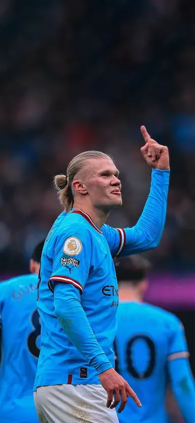

Home/
Fruits/
Furniture/
Motors/
Players/
Shoes/
Utensils/
Our Football Players Collection
Explorre our selection of top football players.Browse through our gallery to learn more about each player.
Player 1:The Ace Forward

Description:An exceptional forward known for his agility and goal-scoring ability.Akey player for any
team.
- Position:Forward
- Strengths:Speed,Precision
- Notable Achievements:Top scoree of the season
Player 2:The Defensive Wall
Description:Aformidable defender known for his solid tackles and defensive strategies.Essential for
maintaining a strong backline.
- Position:Defender
- Skills:Tackling,Blocking
- Honors:Best Defensive Player Awrd
Players 3:The Midfield Maestro
Description:Known for his exceptional passing and playmaking skills,this midfielder controls the tempo of
the game
- Position:Midfielder
- Strengths:Passing accuracy,Vision
- Achievements:Most Assists in Season
Player 4:The Goalkeeper Guardian
Description:A top-class goalkeeper with excellent reflexes and shot-stopping abilities.The last line of
defense.
- Position:Goalkeeper
- Skills:Reflexes,Shot-stopping
- Awards:Golden Glove Winner
Player 5:The Agile Winger
Description:Famous for his speed and ability to deliver preccise crosses.A key player on the flanks.
- Position:Winger
- Strengths:Speed,crossing
- Achievements:Player of the month
Player 6:The Dynamic Attacking Mildfielder
Description:This attacking midfielder excels in creating goal-scoring opportunities with his creativity
and vision.
- Position:Attacking Midfielder
- Skills:Creativity,Vision
- Honors:Best Playmaker Award
Player 7:The Tactical Center Back
Description:A center back known for his strategic positioning and ability to read the game .Strong and
reliable.
- Position:Center Back
- Skills:Positioning,Reading the Game
- Awards:Best Defender of the year
Player 8:The Versatile Forward
Description:A forward with the ability to play in multiple attacking roles.Known for his versality and
goal-scoring prowess.
Player 9:The Creative Playmaker
Description:Renowned for his ability to dictate play and create chances with his exceptional ball contraol
and passing
- Position:Playmaker
- Skils:Ball Control,Passing
- Honors:Playmaker of the year
Player 10:The Reliable Defensive Midfielder
Description:This defensive midfielder is known for his ability to break up opposition attacks and protects
the defense
- Position:Defensive Midfielder
- Skills:Tacling,Interceptions
- Awards:Best Defensive Midfielder
Contact Us
If you have any questionabout our football players,please feel free to email us